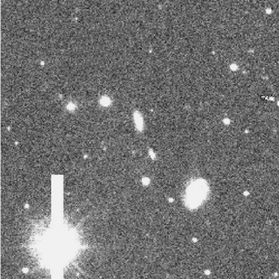
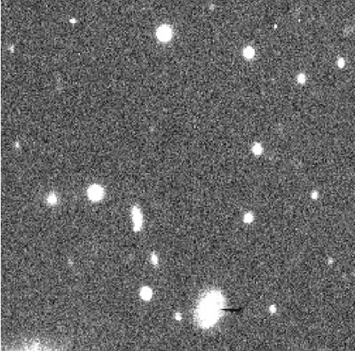
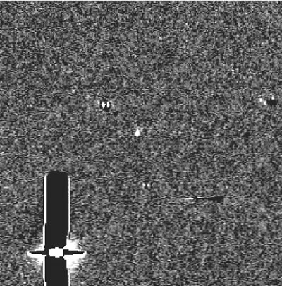
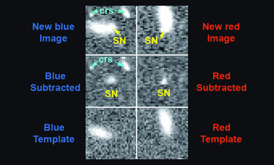

A supernova appears as a bright star for a short period of time at a random position in the sky. Since it is impossible for astronomers to know beforehand where a supernova will occur, they must search the sky in an effort to discover them.
One of the most successful supernova searchers of all time is an amateur astronomer – the Reverend Bob Evans from Australia. Well before computer automated searches were established, the Rev. Evans would look for changes in the light distribution of thousands of nearby galaxies through his backyard telescope. He has found more supernovae than any other individual, with more than 35 supernovae to his credit.
The first systematic supernova search by professional astronomers was undertaken in the early 1990s. For this search, and for the other less organised searches that came before, the astronomers compared (by eye) photographic plates of the same area of sky to search for these suddenly bright stars. These were indeed dedicated scientists since the area of sky covered by each plate could be several degrees in size! More often than not, the supernovae were discovered well after their maximum brightness and were only of limited use, since follow-up observations to obtain spectra and to track the change in brightness over time were difficult to obtain so long after the supernova explosion.
|
 |
In an attempt to save our eyesight and with the help of technological advances such as Charged Couple Devices, supernova searches are now conducted with dedicated telescopes and software that systematically scan specific regions of the sky. In order to find supernovae, we compare new images with older ones to look for a suddenly bright star. For this reason, each region targeted to be searched must initially be imaged to form a template against which all other images can be compared. Here we see a very small portion of a template image of a cluster of galaxies. Then, at a later date, the same field is re-imaged and compared to the template. The timescale for this re-imaging varies depending on the exact nature of the project, but is typically around 2 weeks – the average time it takes for a supernova light curve to rise to maximum. This means that supernovae are now discovered very early in their evolution and can be followed for longer (before they become undetectable) revealing much more information about the object. |
|
 |
Here is the same portion of the field that we saw in the above template. This is an image taken some time later – can you spot the supernova? At this point, either the template or the new image must be scaled to match the other. This is to ensure that normal stars all have the same size, shape and brightness. This is a crucial step since when we subtract the template from the new image we want all of the stars and galaxies that have not changed in brightness to disappear! |
|
 |
The subtracted image then contains only objects that have increased in brightness between the two exposures. They can include asteroids which have moved into the field of view, cosmic ray hits, variable stars or active galaxies that have increased in brightness, and our main target, supernovae. In this subtracted image, we can see the remnants of a very bright star hasn’t been subtracted properly, a few other remnants from bad subtractions and imperfections in the detector, and the supernova (in the centre)! Note how most of the objects visible in the template and the new image have completely subtracted out. We now run computer software on this subtracted image to find all bright, star-like objects. In order to decide whether the objects found are really supernovae, we must still look at a small cut-out region around the candidate by eye. But at least all the hard work of finding candidates has been done by the computer! |
At this point it is very useful to compare what we see in the new image to what we see in the template and in subtracted images. Supernovae are generally associated with galaxies – so if there is no galaxy present in the template image, the candidate is more likely an asteroid (especially if the observation was taken close to the ecliptic). If the object is clearly present in both the template image and the new image, we most likely have a variable star, and poorly subtracted galaxy centres and stars have obvious residuals in the subtracted image. Cosmic ray hits are harder to distinguish, and each search employs a different method to deal with them. Some searches observe through several filters at the same time and require that the object be present at the same place through all filters. Others take two new images, one after the other, and require that the object be present in the same place in both images. It is very rare that a cosmic ray will hit in the same place on two separate images, allowing astronomers to reject them as supernova candidates.
|
 |
In this image we see 6 sub-images of a postage-stamp size section taken around the supernova. For this search we observed through two filters simultaneously (red and blue) and here we are comparing what we see in the template images (bottom) to what we see in the new images (top) through the subtracted images (middle). We can clearly see the supernova is present at the same place in both the subtracted images, and the blue image also contains a couple of cosmic ray hits not visible in the red image. |
Once each candidate has been checked by eye and a list of objects that appear to be supernovae has been collated, the next step is to obtain spectra to confirm the discovery and (if real) determine the supernova type.